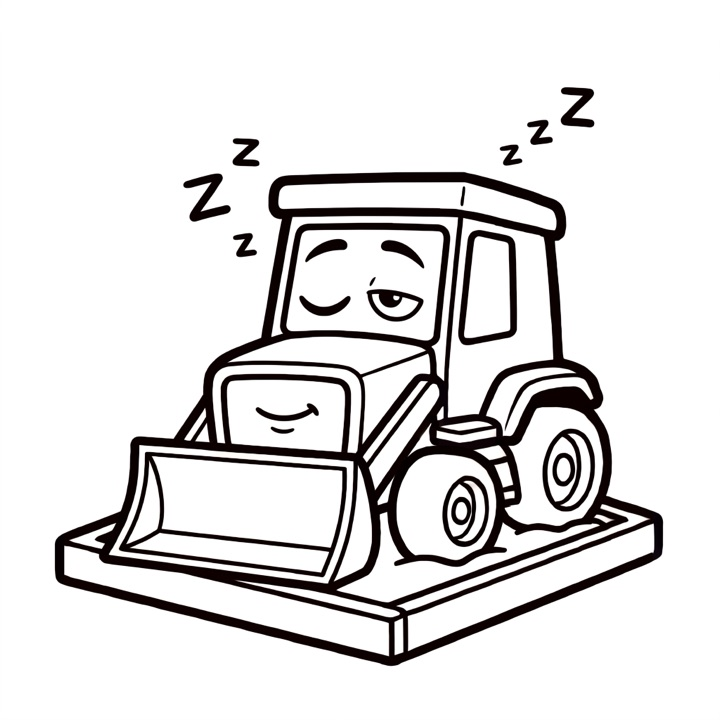

Dozer Sandbox
Sleeps like a laptop.
Wakes in 0.3 s.
Fast, resumable, secure Linux sandboxes for AI coding agents on your Mac — your API keys never go inside. Free and open source.
AlphaStable v0.31.1Version history →
brew trust --tap dozer-sandbox/tap && brew install dozer-sandbox/tap/doz && doz uiApple silicon Mac · macOS 26 or later · Homebrew

Speed
A small Linux VM for your project.
Fast enough to forget it is there.
- ~0.3 sto start, with the image prepared
- ~1 msto pause. Attached terminals freeze and continue.
- ~0.35 sto hibernate. Its memory goes back to the Mac.
- ~0.3 sto wake, with programs, sessions and terminal screens as they were
Measured on an M3, with an Alpine guest of 512 MiB to 1 GiB.
Compared
How it compares.
A Claude Code sandbox, measured by us on an M3 MacBook Air (24 GB, macOS 27) in September 2026 — the median of 5 runs, each tool at its defaults.
| Measure | Dozer Sandbox | Docker containers | Docker Sandboxes | Apple container |
|---|---|---|---|---|
| Start, to Claude Code's first screen | 1.46 s | 0.78 s | 5.12 s | 2.24 s |
| Pause and resume, memory kept | about 1 ms | about 35 ms | not offered | not offered |
| Put away, memory freed | 1.16 s (hibernate) | 0.12 s (stop) | 5.31 s (stop) | 0.18 s (stop) |
| Back to a working agent | 0.57 s | 0.71 s | 1.28 s | 2.01 s |
| The same programs running afterwards | Yes — same process, same screen | No — restarted | No — restarted | No — restarted |
Dozer is slower to start cold and to put away — it writes the sandbox's memory to disk, so it can bring the same programs back.
| Measure | Dozer Sandbox | Docker containers | Docker Sandboxes | Apple container |
|---|---|---|---|---|
| Its own virtual machine per sandbox | Yes | No (one shared VM) | Yes | Yes |
| Hibernate and wake with programs still running | Yes | No | No | No |
| Survives a restart of the app that runs it | Yes | No | No | No |
| No network card — the only way out is a proxy | Yes | No | No | No |
| Blocks the network by default, with rules per sandbox | Yes | No | Yes | No |
| Your keys never enter the sandbox | Yes | No | Yes | No |
| Every connection logged | Yes | No | Yes | No |
Versions: Docker Desktop 4.91.0, Docker Sandboxes (sbx) 0.38.0, Apple container 1.2.2, and an earlier Dozer build. Docker Sandboxes' network and key rows are from its documentation; everything else was measured. One machine's numbers — yours will differ.
The boundary
The VM is the boundary.
Each sandbox is its own Linux virtual machine on Apple's Virtualization framework, with your project folder inside it. Run Claude Code, Codex or pi with its permission prompts off.
The network
Every connection. A policy you can read.
A sandbox has no network card. The proxy on your Mac judges every connection against permissions you can read and change with doz net permissions.
Credentials
Your keys never go in.
The proxy swaps your credentials in on the way out. The sandbox only ever sees a placeholder.
Your project
Your project, at /workspace.
A folder on your Mac, shared into the sandbox. Keep .env files and secrets out of reach with .dozignore, or read-only with .dozreadonly. The rules guard against accidents; they are not a security boundary.
Sleep
Hibernate. Give the memory back.
A hibernated sandbox lets go of its memory and wakes with every program still running where it was. After a crash, sleeping sandboxes are restored with their sessions.
The dashboard
One place for all of it.
doz ui opens a dashboard with your sandboxes and their terminals in the browser. Install it as an app on your Mac.
Every screen
On every screen you own.
doz serve shows the same dashboard to your other computers, tablets and phones on your network, admitted with an invite or a QR code.
Restore points
Undo is instant.
Restore points, duplicates and templates are APFS clones. Go back to a moment before the change, or fork a new sandbox from it.
Agents
Bring your agent.
Claude Code, Codex and pi run ready to work, told where they run, with their credentials kept on your Mac.
Use cases
Three things worth a sandbox.
A risky change
A dependency upgrade, a big refactor, a migration. Let a sandboxed agent work on your project folder, with a restore point to fall back to. Review it with git diff.
Jail an untrusted agent
No folders shared, no logins held, the clipboard, browser and file bridges off, and the internet only where you allow it.
A project that holds secrets
Keep .env files, credentials and customer data out of the agent's reach, without moving anything.
Install
brew install dozer-sandbox/tap/doz
# once per Mac: Homebrew loads a third-party tap only once trusted
brew trust --tap dozer-sandbox/tap
brew install dozer-sandbox/tap/doz
# opens the dashboard; a new install starts on its setup wizard
doz uiPrefer the terminal? Run doz onboard once, then doz up in a project folder.
Requirements
Apple silicon. macOS 26 or later. Homebrew. For an agent, an account it can use.
Channels
dozis stable and recommended.doz-betaanddoz-canarycome earlier.Trust
Signed and notarised. Updates come from a feed signed with the project's own key, and nothing unverified is installed.
Everything in the box.
- Sleeps like a laptopPause in 1 ms. Hibernate to disk. Wake in 0.3 s, programs still running.
- No network cardEvery connection goes through a policy you can read.
- Keys never go inThe proxy swaps credentials in. The sandbox sees a placeholder.
- Dashboarddoz ui. An installable app, with terminals in the browser.
- Claude Code, Codex, piSessions outlive your terminal.
- Restore pointsInstant APFS clones. Go back, or fork.
- .dozignore, .dozreadonlyLock files, or make them read-only.
- doz serveThe dashboard on your LAN, with invites and QR codes.
- Pause, resumeAbout 1 ms.
- Crash recoveryBack, with their sessions.
- PermissionsReadable and editable.
- ImagesBase images and Dockerfiles.
- Templates, duplicatesStart set up your way.
- GitHub as youRead-only by default.
- Signed and notarisedThe doz binary is signed and notarised.
- Signed update feedStable, beta and canary. Nothing unverified installs.
- Let your Mac's agent drivePrompts to install, set up and run sandboxes.
- SSH agentForward your Mac's agent.
- Browser sign-inOpens on your Mac, back in the sandbox.
- Clipboard, open filesBridges to your Mac.
- ResourcesEvery byte accounted. Clean up safely.
- Settingsdoz config, doz.toml, dashboard.
- Tools layergh, ssh and tmux, set up for you.